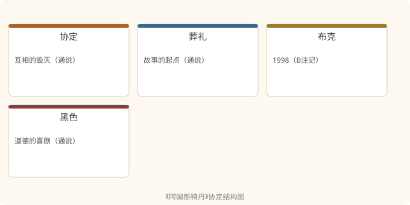

阿姆斯特丹
一、基本信息
| 作者 | 伊恩·麦克尤恩 |
|---|---|
| 成书/出版 | 1998年（作者页注记：Britannica——阿姆斯特丹——1998布克奖） Ian McEwan — Encyclopaedia Britannica（百科全书） |
| 国别/地区 | 英国 |
| 时代 | 现当代 · 20世纪90年代末 |
| 体裁 | 长篇小说 |
| 语言 | 英语 |

《阿姆斯特丹》协定结构图（主题·结构图）
二、创作背景
作者页注记：阿姆斯特丹——'（Britannica：1998布克奖）'。
Britannica：麦克尤恩——当代英国作家（作者页语境——待核）。
题材（通说待核）：两位老友的'安乐死'协定——黑色的道德喜剧。
三、内容脉络
（通说待核）莫莉葬礼后的协定：谁先失能谁被终结。
（通说待核）各自的堕落与阿姆斯特丹的结局。
四、主要人物表
| 人物 | 身份 | 说明 |
|---|---|---|
| 弗农/克莱夫 | 老友 | （通说待核） |
五、主题与艺术特点
- '安乐死'协定的黑色喜剧（通说待核）。
- 媒体与艺术的自利（通说待核）。
- 布克奖（B注记）。
六、影响与评论
- Britannica：1998布克奖（作者页注记）。
Ian McEwan — Encyclopaedia Britannica（百科全书） - Britannica：麦克尤恩《赎罪》等（作者页交叉）。
Ian McEwan — Encyclopaedia Britannica（百科全书）
七、阅读建议
难点
- 双主角的镜像结构。
- '协定'的道德反转。
- 《阿姆斯特丹》中译本（上海译文等——通说待核）。
- 英文原版。
麦克尤恩获奖作；与《赎罪》对读。
八、待核实
- 弗农/克莱夫人名核对（通说）。
- 1998年出版细节待核。
- '安乐死'情节细节待核。
本页主要来源
相关作品：10 1/2章世界史路